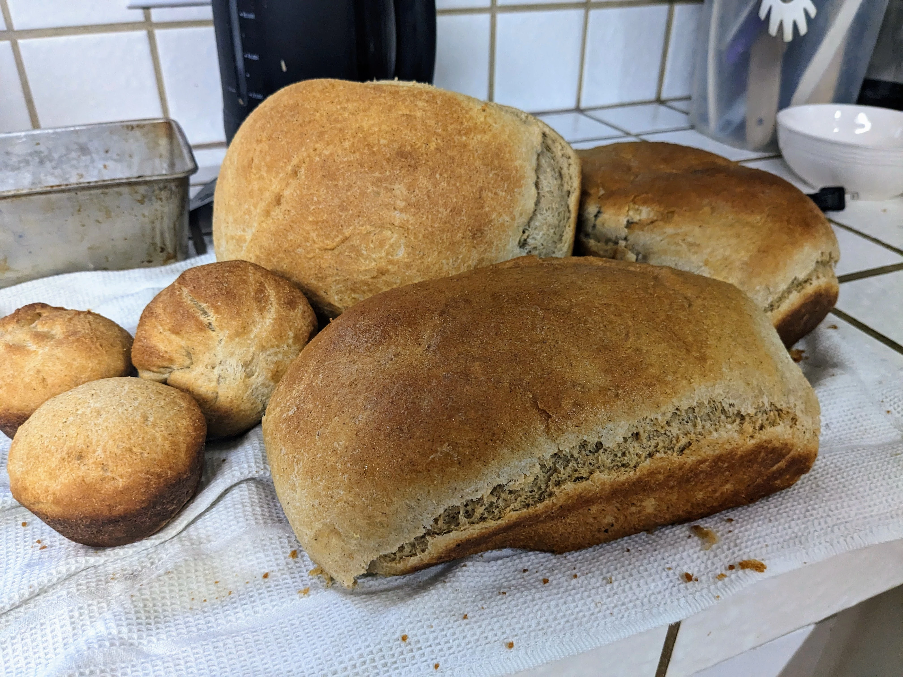

Honey Wheat Bread
- Author
- Luke Beukelman
- Time
-
- Active: 27m0s
- Inactive: 3h10m0s
- Total: 3h37m0s
This is the sandwhich loaf I was raised on, and is the primary recipe I continue to use for day-to-day bread consumption. The bread comes out tender and light, slightly sweet from the honey, and without the bitter taste that often comes from whole whea bread thanks to using hard white wheat, rather than hard red wheat (which is often the base for commercial bread flours).

The recipe usually yields enough dough for 3 loaves of roughly 3lb 10oz (loaf size will vary depending on the pan you use to bake in), plus a little extra that I will use to make snack-sized buns in a muffin pan. This recipe also works well for baking buns - just shape the dough into buns on a sheet pan (air bake pans will help prevent the bottoms from burning).
I use freshly ground prarie gold (hard white spring wheat) berries for my flour. I found I could get 2lb bags from Natural Grocers for $1/lb, which is the cheapest I’ve been able to find them. My mom used to get wheat in special orders from UNFI, but I was unable to find Prarie Gold in our regional UNFI catalogue.
Before mixing all of the components, I mix together the flour and water to form an autolyse, which aids in the formation of gluten and softening the bran in the flour. This results in slightly reduced kneading times. The autolyse can be let to sit for one to three hours, the longer the better.
After a few runs where the bottom of my loaf clung to the bottom of the loaf pan, despite my best effort to thuroughly oil the pan, I switched over to using just enough parchment paper to cover the bottom of the pan, while still oiling the sides (you can use a knife or spatula to free the sides if necessary).
Recipe
Autolyse Mix
Ingredients
- 1400g Hard white spring wheat flour, whole grain
- 850g Water
- Active: 5m0s
- Inactive: 1h0m0s
- Total: 1h5m0s
Instructions
- Mix flour and water with hand until combined.
- Let sit for one hour.
Yeast Sponge
Ingredients
- 50g Warm water
- 2T Active dry yeast
- Active: 2m0s
- Inactive: 10m0s
- Total: 12m0s
Instructions
- Mix yeast into water until disolved.
- Wait 10 minutes until yeast sponges. If the yeast does not look active by the end of 10 minutes, it is probably dead.
Honey Wheat Bread
Ingredients
- All Autolyse mix
- All Yeast sponge
- 26g Kosher salt
- 1/2C Honey
- 1/2C
EV olive oil
Note: Any vegetable oil should suffice, I like to use EVO.
- Active: 20m0s
- Inactive: 2h0m0s
- Total: 2h20m0s
Instructions
- Mix oil and honey, and salt together in the measuring cup, I find that this helps loosen up the honey so that less of it sticks to the walls of the cup.
- Pour the combined oil, honey, salt, and yeast sponge into the autolyse.
- Knead the dough ball in the mixing bowl using a stretch and fold method for roughly 10 minutes. The ending dough ball should be able to be stretched thin, although not quite forming a window pane as per the nature of whole wheat flour. Continue to cover the ball in flour as it starts sticking to your hands.
- Oil the outside of the dough ball and place in a covered bowl to rise for an hour, or until dough has roughly doubled in volume.
- Punch the dough ball down, and split and shape portions for the desired shape (makes ~3 loaves). For loaves, shape by stretching the dough under itself and tucking in the bottom center.
- In the meantime, start preheating the oven to 350 degrees F.
- Place the pans in the oven, bake for 25-30 minutes, or until the tops are lightly golden and sound hollow when tapped.